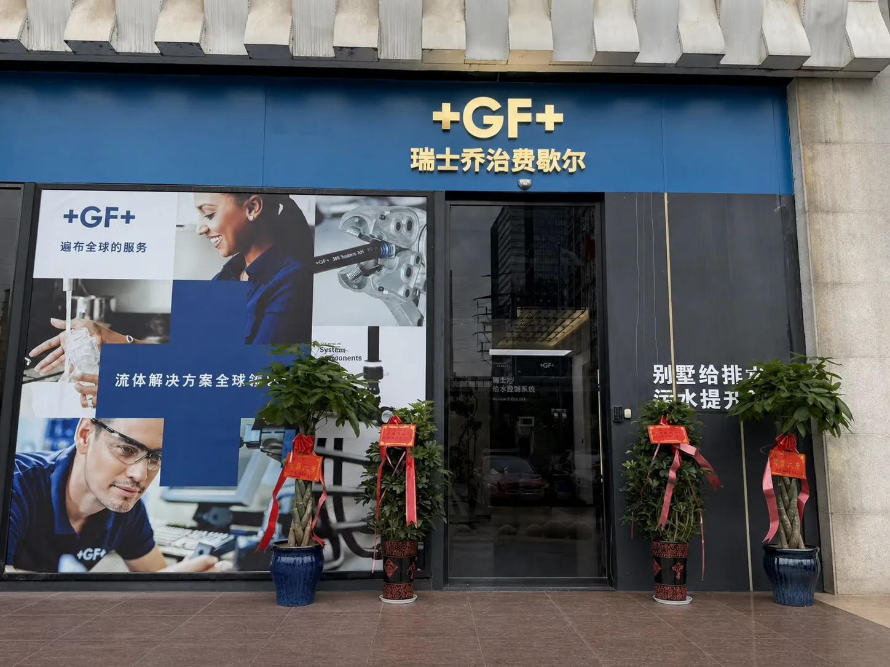
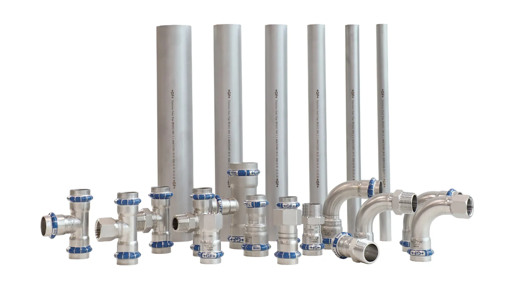
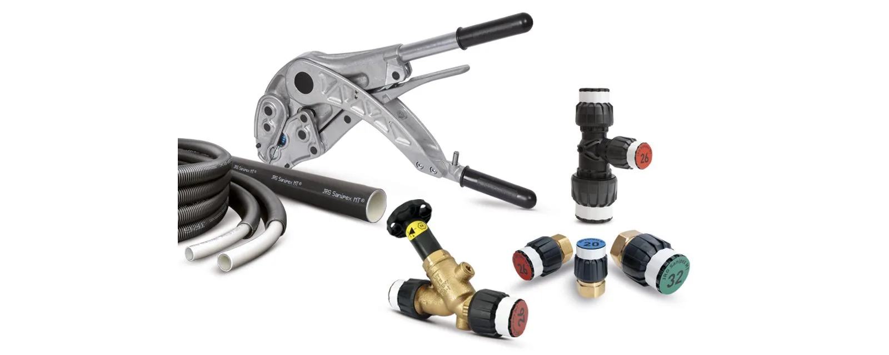
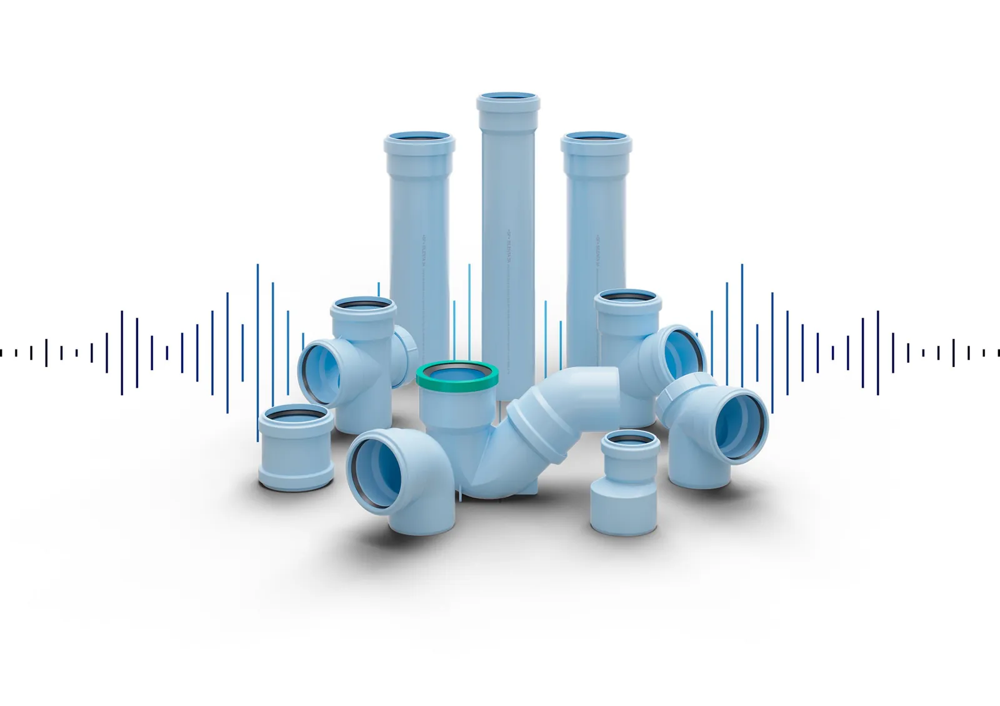
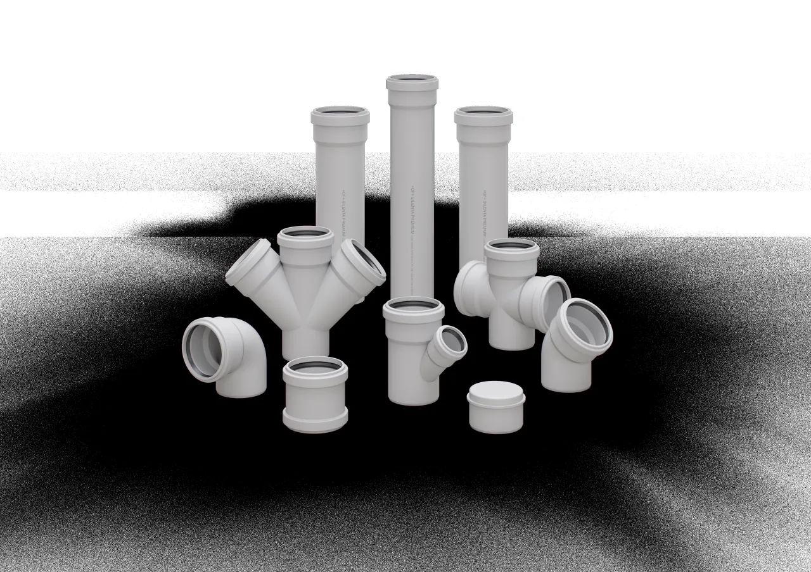
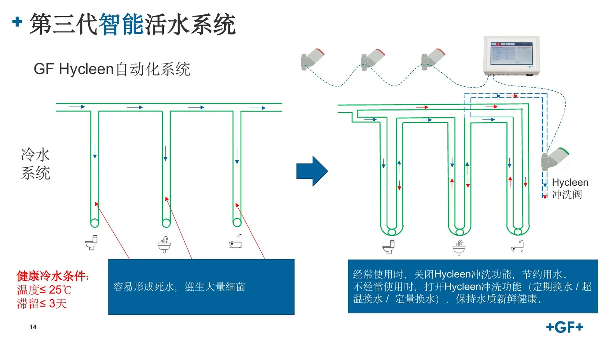
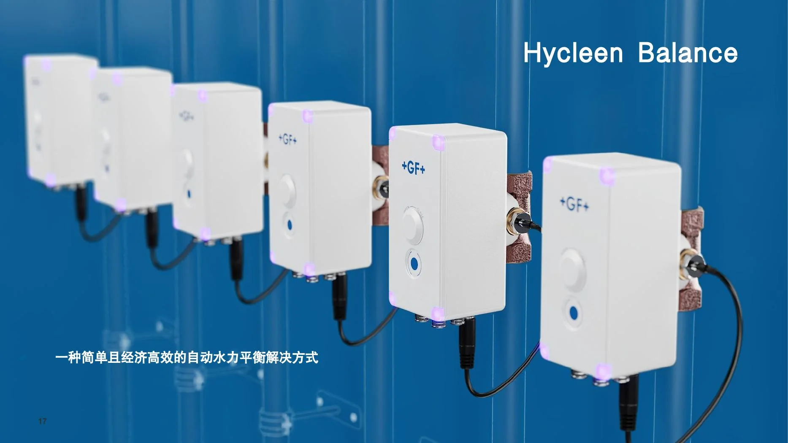
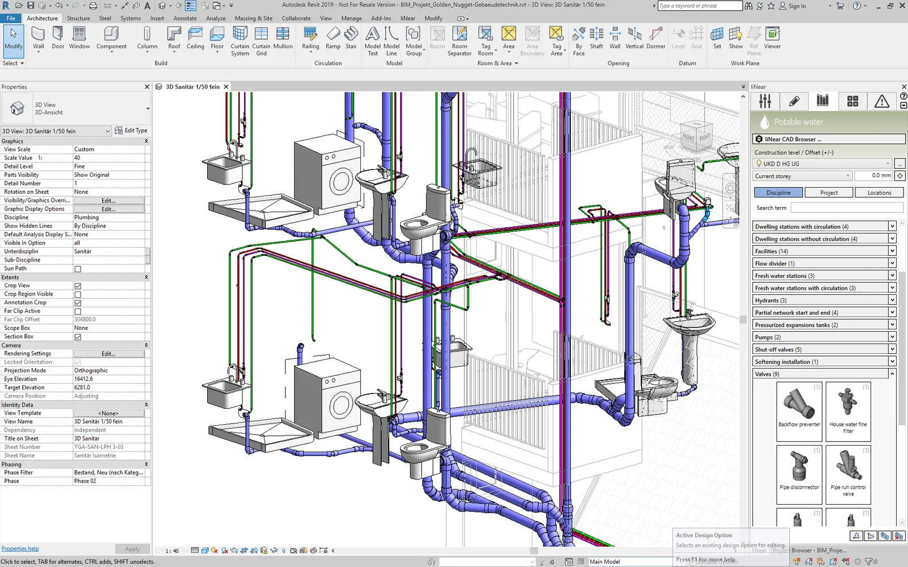
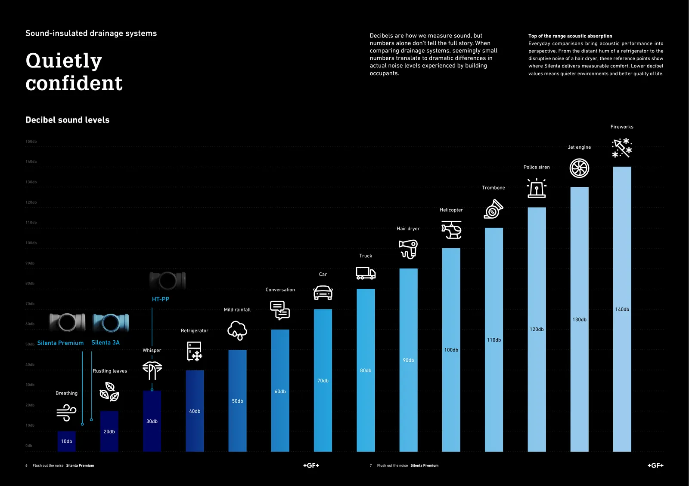

+GF+ · GLOBAL FLUID SOLUTIONS
让水的每一次进入、使用与离开，都有系统依据。
GF为品质住宅提供从给水、热水、排水到连接与智能控制的流体系统基础。泽丰把这套系统带入湖南住宅的真实设计、施工与交付。
GF流体解决方案
全球服务网络
全球服务网络
01 · THE BRAND
高品质住宅选择 GF，
选择的是一套流体系统能力。
GF不是单一管材品牌。它长期围绕流体的输送、连接、控制与排放建立产品、工程和服务体系，服务于建筑、工业与基础设施等不同场景。
当给排水被放进真实住宅，水质、压力、热水、静音、检修和长期维护会同时出现。GF的价值在于：不同功能的产品可以被放进一条可计算、可深化、可验证的系统路径里。

湖南服务中心 · 实体展示与技术交流02 · HUNAN SERVICE CENTER
好产品，还需要强力的
设计与落地。
GF系统进入湖南住宅，不止是把产品送到现场。泽丰通过本地展示、方案选型、设计深化、施工协同和交付支持，让品牌能力真正进入一套房子的管线、节点和日常体验。
看得到在长沙 GF 专场店查看真实管材、管件与系统样品。
算得清结合户型、人数、水点和压力条件完成选型与水力判断。
落得下协调净高、管综、检修、施工工艺和验收记录。
03 · PRODUCT SYSTEMS
从给水到排水，
每个系统都有明确任务。
产品不是套餐。最终选型要结合水质、流量、压力、空间、噪声目标、施工条件和维护责任。

WATER SUPPLY · 01
GF 316L 不锈钢给水
S31603材料与卡压连接形成清晰的给水系统，适合对卫生、耐久和材料表达要求高的主管与支路。
- 管材、管件与转换接口成系统
- 连接工艺和施工验收可追溯
- 需结合项目水质与规范复核

WATER SUPPLY · 02
JRG Sanipex MT
面向户内分配与末端连接的全通径系统，减少局部阻力，并适应住宅空间中的柔性布管与可维护连接。
- 适合分配管和复杂户内路径
- 按温压、管径与连接条件选型
- 不以单一额定参数替代项目计算

DRAINAGE · 03
Silenta 3A 静音排水
住宅主力静音排水系统，围绕管材、管件、管卡与建筑构造共同降低夜间排水对生活的打扰。
- 淡蓝色三层矿物增强PP系统
- 按流量、管径与安装条件理解声学数据
- 适用于品质住宅常规静音目标

DRAINAGE · 04
Silenta Premium
面向卧室邻近管井、豪宅套房和更高声学目标的高阶静音排水路径。
- 更高声学要求的项目优先评估
- 不能脱离管卡、包覆和建筑节点谈分贝
- 先做水力与声学目标，再决定系统层级
节点协同地漏 · 防水 · 坡度 · 水封 · 检修
04 · INTELLIGENT WATER
管道不只是输送水，
也应该理解水如何被使用。
大宅中的客房、保姆房、地下室和季节性水点可能长期低频使用。Hycleen把传感器、冲洗阀、主控制器与通信网络组成控制闭环，让建筑水系统从“安装完成”走向“可感知、可判断、可管理”。

01让低频水点，
实际控制逻辑、冲洗水量与排水路径须按项目使用特征和当地规范设计。
HYCLEEN AUTOMATION SYSTEM
让低频水点，
不再成为被遗忘的末端。
系统持续关注关键点位。常用水点保持关闭，避免不必要的冲洗；低频水点可按时间、温度超限或用水量条件触发置换，并把排水去向、动作逻辑与维护责任在设计阶段说清楚。
感知温度、时间、用水状态
判断是否达到项目设定条件
动作定点置换并导向安全排水
记录运行状态与维护依据
02每一条热水回路，
具体可接入能力、控制范围及运行策略以项目配置和 GF 最新技术资料为准。
HYCLEEN BALANCE
每一条热水回路，
都有自己的平衡温度。
传统静态调节很难跟随大宅不同时段、不同回路的真实变化。Hycleen Balance通过联网阀门与控制系统实施自动水力平衡，可为各回路设定独立平衡温度，并支持按时间和温度管理运行。
自动水力平衡根据回路状态持续协调，不把一次手动调节当作长期结果。
独立温度设定不同回路按实际功能与使用节奏设定目标。
系统集成可与楼宇管理系统衔接，形成更清晰的运行视图。

05 · RESIDENTIAL SOLUTIONS
把 GF 产品，放进真实住宅的五条路径。
同一个品牌，不同的住宅、楼层、用水方式和安静目标，需要不同的系统组合。
稳定给水与热水
从入口水质、流量、管径、压损到热水循环，解决多点用水时的水压和等待问题。
GF 316L · Sanipex MT · JRG阀门智能活水管理
识别低频水点与关键回路，把Hycleen的监测、置换和平衡逻辑放进住宅运行策略。
Hycleen · Hycleen Balance静音排水与防返味
让排水能力、水封、通气、管卡、包覆和卧室邻近关系一起成立。
Silenta 3A · Silenta Premium卫生间与淋浴节点
把地漏、防水坡度、清洁、检修和排水支路整合，减少交付后的隐蔽风险。
Aqua Ambient · Silenta 支路地下室与复杂排水
先判断自然排水路径，再组织污水提升、通气、防倒灌、报警和检修空间。
排水系统 · 提升设备 · 维护路径06 · DESIGN EVIDENCE
品牌价值，最终要落到设计图和现场节点。
高档住宅不应只展示材料。我们把系统放进 BIM 管综、水力计算、静音节点与交付记录里，让每一项选择都能解释、能复核、能落地。
需求访谈水力计算BIM深化施工交底试压冲洗验收记录


07 · DESIGN TO OPERATION
GF提供系统基础，
泽丰负责把它交付成住宅结果。
家庭人数、楼层、水点、压力、水质和安静目标。
给水、排水、地漏和阀门按任务组合。
管径、净高、检修、穿墙和设备间秩序。
连接、固定、防污染、保温和节点控制。
试压、冲洗、灌水、通球、声学与照片归档。
阀门、低频水点、设备和隐蔽路径可追踪。
技术参数以项目水力计算、GF最新技术资料、中国现行规范和现场条件为准。316L不等于“永不腐蚀”，实验室声学数据也不等于所有住宅的固定实测值；好的方案必须把边界说清楚。
GF · ZEFENG MEP · HUNAN
让真正的品牌，进入真正的住宅系统。
带上户型、楼层、家庭人数和用水需求，我们从一套住宅的真实条件开始判断。
提交项目资料